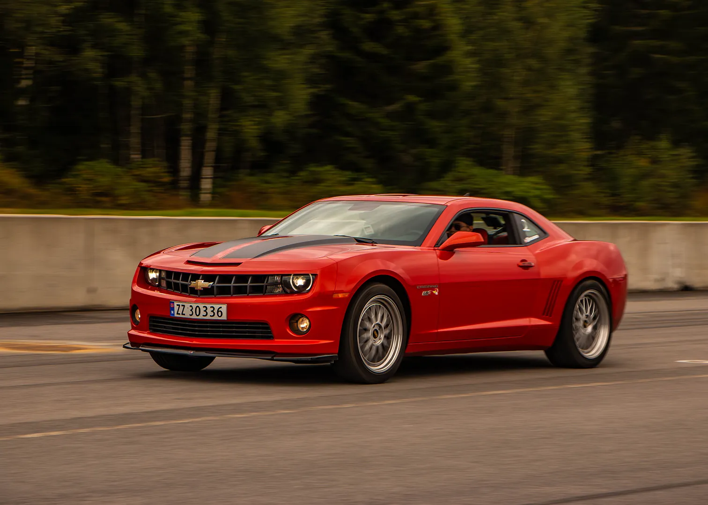
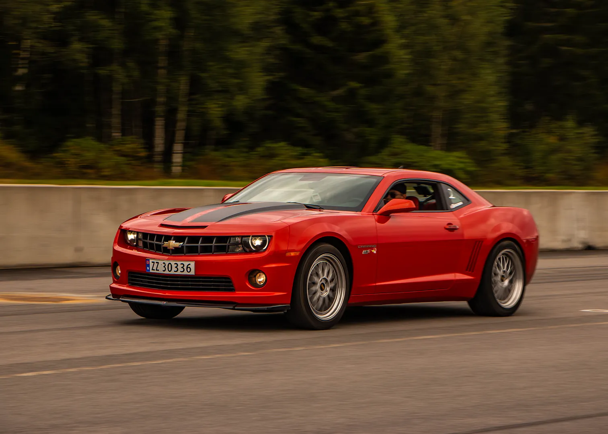

Jeg spesialiserer meg på å fange de slanke linjene, rå kraften og intrikate detaljene som gjør hver bil unik. Enten det er en klassisk muskelbil, en høyytelses sportsbil eller et spesialbygget mesterverk vet jeg at hvert kjøretøy forteller sin egen historie – og jeg er her for å fortelle den gjennom bildene.
Med et skarpt øye for bilestetikk og en dyp forståelse for håndverket bak hver bil, skaper jeg dynamiske, effektfulle bilder som viser frem kjøretøyet ditt i sitt beste lys. Fra dramatiske bilder som fremhever dristige kurver til nærbilder som fanger de fine detaljene. Fotograferingen min går lenger enn bare å dokumentere bilen din – det handler om å feire kunsten med bildesign.
Utforsk porteføljen min for å se hvordan jeg bringer bilens historie til live. La oss jobbe sammen for å ta bilder som etterlater et varig inntrykk.
 
